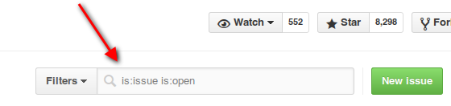

Welcome to Syncthing’s documentation!
As a new user, the getting started guide is a good place to start, then perhaps moving on to the FAQ. If you run into trouble getting devices to connect to each other, the page about firewall setup explains the networking necessary to get it to work.
As a developer looking to get started with a contribution, see how to build, how to debug and the contribution guidelines. This documentation site can be edited on Github.
Contact
If you’re looking for specific people to talk to, check out the Project Presentation.
To report bugs or request features, please use the issue tracker Before you do so, make sure you are running the latest version, and please do a quick search to see if the issue has already been reported.

To report security issues, please follow the instructions on the Security page.
To get help and support, to discuss scenarios, or just connect with other users and developers you can head over to the friendly forum.
For a more real time experience, there’s also an IRC channel
#syncthingon Freenode.For other concerns you may reach out to members of the core team, currently @calmh, @AudriusButkevicius and @Zillode.
The main documentation for the site is organized into a couple of sections. You can use the headings in the left sidebar to navigate the site.
Introduction
For Users
- Command Line Operation
- FAQ
- Configuration
- Advanced Configuration
- Folder Master Configuration
- Understanding Synchronization
- Firewall Setup
- Relaying
- Using Proxies
- Ignoring Files
- File Versioning
- Custom Discovery Server
- Custom Relay Server
- Custom Upgrade Server
- Starting Syncthing Automatically
- Community Contributions
- Reverse Proxy Setup
- Security Principles
For Developers